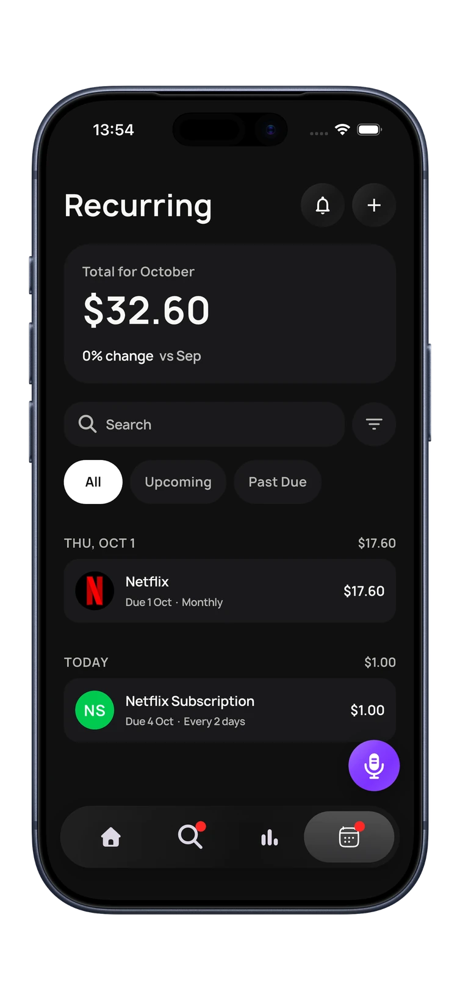

The easiest way to track subscriptions and recurring bills is to let your spending data find them for you. Repeating charges follow a pattern: the same merchant, a similar amount, on a regular schedule. BudgetGo looks for that pattern in your transactions, then shows you what's coming next, so a renewal is something you planned for rather than something you notice on your statement.
Why recurring charges slip past you
Subscriptions are built to be forgettable. They're small, they renew on their own, and most are on autopay. In a 2022 survey of 1,000 US consumers by C+R Research, reported by CNBC, people underestimated their monthly subscription spending by $133 on average, and 42% said they had forgotten about a subscription they were still paying for.
Bills add a second problem: timing. Rent, phone, insurance and loan payments are expected, but if three of them land in the same week, a normal week of spending can suddenly feel tight. Knowing when a charge hits matters as much as knowing that it exists.
How BudgetGo detects subscriptions and recurring bills
Every transaction that reaches BudgetGo is categorized automatically. Alongside that, BudgetGo looks for charges that repeat: the same merchant coming back on a regular schedule. Those are grouped as recurring bills and subscriptions, with the next due date and how often they repeat.
You don't need to set anything up first. As your history builds, monthly charges such as streaming, music, phone plans and gym memberships show up as recurring items you can see in one place.

What you see: Due this week, Recurring and Payments
Recurring charges show up in three places, each answering a different question.
Due this week: “What's about to come out?”
On the home screen, Due this week lists the bills and subscriptions coming up in the next few days, with the date and amount for each. It's the quickest way to check before a bigger purchase.
Recurring: “What do I pay for every month?”
The Recurring view shows your total for the month and every recurring charge with its due date and frequency. You can switch between all items, upcoming ones and anything past due, or search for a specific merchant.
Payments in Analytics: “What does this cost me a year?”
In Analytics, Payments sums up your monthly bills, how many are tracked, what they add up to per year if nothing changes, and what's due next. The yearly number is often the one that makes people act. In the example screenshot above, a $128.97 monthly total works out to $1,547.64 over a year.
How upcoming bills fit your budget
BudgetGo works with one active budget at a time, or in tracking-only mode with no budget. Recurring charges are useful either way.
- With a budget. Bills still due this period are money that's already spoken for. Knowing they're coming helps you read your remaining budget honestly, and it pairs well with Safe to Spend and the spending forecast.
- Tracking only. Due this week works as an early warning, so a cluster of bills doesn't catch you off guard.
A 10-minute recurring charges check-in
Detection does the finding. A short check once a month turns it into savings.
- Open Recurring and read the monthly total. Is it higher than you'd have guessed?
- Look for anything you don't recognize. Card descriptors sometimes use a parent company's name, so search the merchant before assuming it's wrong.
- Mark keep, downgrade or cancel. Ask whether you used it in the last month and whether a cheaper plan would do.
- Cancel with the provider. Subscriptions bought through the App Store are managed in your phone's Settings. Others are cancelled on the company's own site or app.
- Check next month. A cancelled subscription should stop appearing as a new charge. If it reappears, contact the provider.
For a deeper clear-out, including yearly plans and free trials, follow our guide to finding and cancelling forgotten subscriptions.
Getting the most complete list
BudgetGo can only spot what it can see. The more of your spending reaches it, the more complete your recurring list will be. If a bill comes from a card or account that isn't in BudgetGo yet, it won't be detected. You can add spending in several ways:
- Banks linked through Plaid, where supported, and Apple Wallet accounts through FinanceKit
- Apple Pay payments and bank SMS alerts, captured with Apple Shortcuts automations
- Imported statements as PDF, CSV or Excel files, which add past months of history at once
- Voice and manual entry for anything else
Importing a few months of statements is a fast way to give BudgetGo enough history to find monthly charges. See every way to add spending to BudgetGo.
Frequently asked questions
How do I track all my subscriptions in one place?
Use a tracker that reads your actual transactions, so charges are found from your spending rather than from memory. BudgetGo detects recurring bills and subscriptions and lists them together with their due dates and a monthly total.
Can BudgetGo cancel subscriptions for me?
No. BudgetGo tracks the payments and shows what's coming up. You cancel or change a subscription with the provider, or in your phone's Settings for App Store subscriptions.
Why isn't one of my bills showing up?
It's probably paid from an account or card BudgetGo can't see yet. Link the account, set up an automation, or import a statement that includes the charge.
Do I need a budget to see upcoming bills?
No. Recurring bills and subscriptions are tracked whether you use one active budget or tracking-only mode.